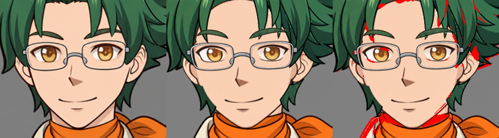

卡洛特先生・靜態臉部調整
2026-10-29：原圖比對由 91.12 → 95.35 分。目標 99 分，尚未通過。
互動模型 · 圖層檢查 · 差異與待重畫清單
左：原圖；中：調整後實際模型；右：差異。固定畫幅與相同評分規則，未重新對齊比較畫面。

仍需重畫的部件
- 側髮_L：同一部件包含前方髮束及後方髮量，無法整層移到臉後；後髮本身已在最底層。
- 前髮_R、前髮_L：原圖髮際線尖角、額頭開口形狀不同；整張仿射對位不能重現局部形狀。
- 臉：臉頰收窄幅度與下巴曲線仍有差異。
- 眼白、上眼線、眼球：位置與大小已調整；眼線弧度、眼白開口與虹膜局部比例仍不相同。
- 耳朵_R、耳朵_L：耳廓形狀與內部摺線不能完全對上原圖。
後髮已確認在所有圖層最底部。側髮_L 含有前後髮束，不能靠整層移到後面解決，已列為重新拆開生成項目。單層輸出一致性不代表原圖還原度。本次手勢未調整。